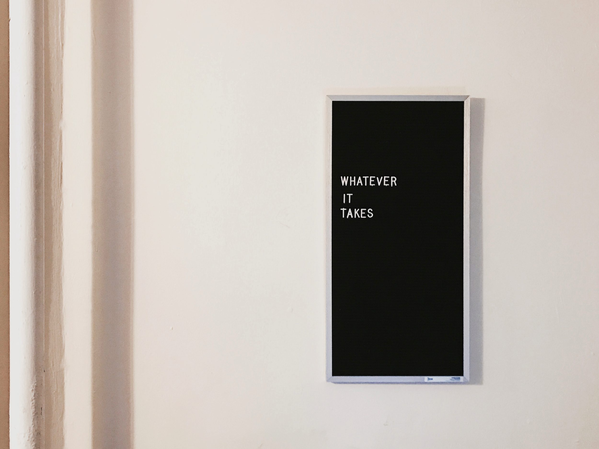

Well, first of all, sorry for not updating about my progresses on Frontend development through Freecodecamp curriculum but there were basically none since last May. Why? Work got in the way, with a larger role and more duties taking over little by little the energy I had to focus on coding after work. First reason.
Second reason, health issues. I've been battling with the most pernicious kind of backpain since spring and it intensified around June, when it became a routine to wake up in the middle of the night due to the pain, spend half an hour trying to get back to sleep, get up much earlier than due (like 6-6:30) and spending the rest of the day in a perennial tired state. Rinse and repeat the day after. For weeks.
So both issues participated in making me stop following the Freecodecamp curriculum. Which is a big shame as part of what I learnt in between February-May is now forgot and will have to be relearnt. Such is life, it never stops to put obstacles on your path.
Luckily, nowadays the backpain is more manageable. I had to follow therapy for a few weeks and will probably have to do so again. At least it doesn't wake me up each night though and leaves me with more energies for the day. At the same time, I left my job altogether. Big reason for it was that it had become too stressful but a lot of it was also due to not feeling appreciated by the supervisor. When I specifically asked him if I could get a title that would match more the increased duties I was taking charge, I was instead asked to apply for a higher position, which would entitle more duties for no pay rise.
The choice was thus simple.
It is a risk now. Getting into a new career at a venerable age (relatively to the IT industry), on my own, with the saved money on my bank account clock ticking every day, reducing the amount a bit every week, is no easy task, I'm aware of it. But I've decided that instead of being a "korpo szczur", a "corporation rat" in polish, spending countless hours of my life doing repetitive tasks for a huge company that is churning every day more money that I would even imagine having in a lifetime, I would invest some of my time into improving myself and learning, practically this time, development in order to be able to choose a better job. Eventually, to freelance and be also physically not tied to a specific location on this Earth. Easier said than done, of course. I've already had my share of relatives and friends aghast at having heard I had left a sure job to follow a risky path.

One has to take risks. If not now, nearly at middle age, when? At 60?
I'm not excluding going back to a similar job that I had in the last 2 years, for a few months, just to be able to buy myself more time. I won't see it as a failure as long as I'd be able to continue coding in my spare time.
We'll see. To sum it up, consider this a "sorry post" for not having updated on the Freecodecamp course for so long. Updates will resume from now :)
Photo Courtesy: Whatever It Takes by Jon Tyson
Tweet Go Top
comments powered by Disqus